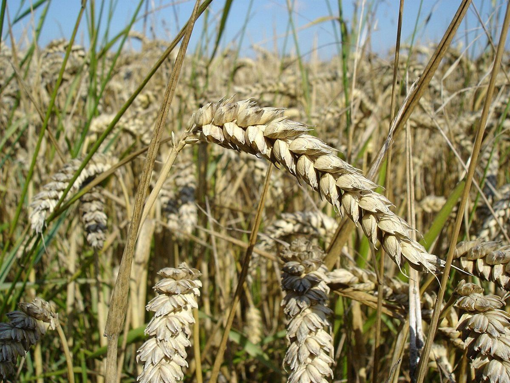
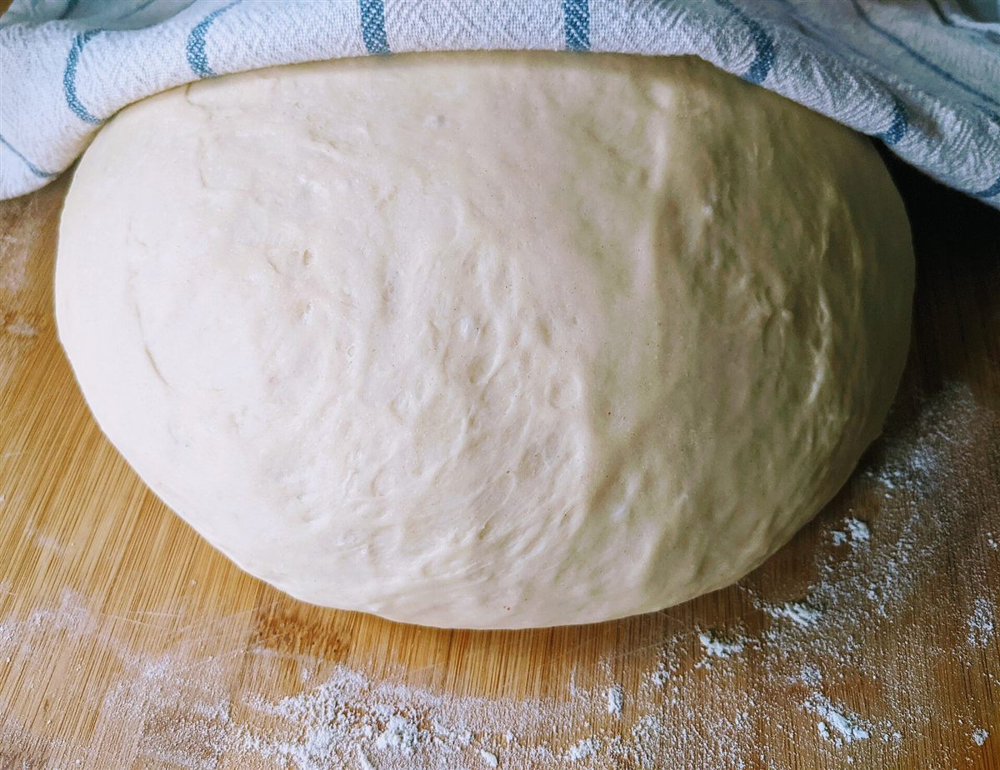

お店について



制作側の案
「ラベルと罫線」というデザインの見立て
このサイトの見せ方について、制作側が考えた案です。パンを包む紙に押す小さなラベルのように、細い罫線で縁どった面と、深い色のベタ面を交互に置いて、上から順に読み進められる構成にしています。
全ページに共通するのは、二重の罫線の枠、角の小さな切り欠き、見出しの前の通し番号(01〜04)の3つです。まだ確認できていない情報は、ラベル風の枠に「準備中(お問い合わせください)」と入れ、空欄に見せずに同じ表示でそろえています。
欧文の「Boulangerie Volubex」は店名の表記として、大きな文字組みにしています。
これは制作側の案であり、お店の理念や由来ではありません。
確認できている情報
上記以外は、現時点で掲載できる情報がありません。
- 店名
- ヴォルベックス(Boulangerie Volubex)
- 業種
- パン屋
- 所在地
- 和歌山県新宮市三輪崎1076-1
- @boulangerie_volubex
準備中の項目
- 店主・スタッフのご紹介準備中(お問い合わせください)
- お店のこだわり準備中(お問い合わせください)
- 店名の由来準備中(お問い合わせください)
- 営業時間準備中(お問い合わせください)